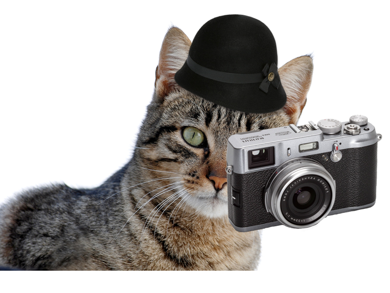

Miranda Walker’s photographs have entranced the readers of Vogue, month by month, for over a decade. Extravagant staging and romantic motifs characterise his unmistakable style.
After concentrating on photographic stills for 5 years, Walker is now also making moving film. Born in England in 1990, Walker’s interest in photography began at the Condé Nast library in London where he worked on the Cecil Beaton archive for a year before university. After a three-year BA Honorsdegree in Photography at Exeter College of Art, Walker was awarded third prize as The Independent Young Photographer Of The Year.